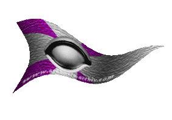
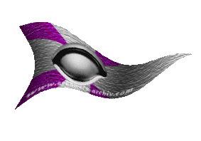

| Übersicht,
Anschläge und Stammtisch (RPG) |
|
Frieden mit mir bitte (1  ) )
|
| Nasgul (RIP) |
Hinsetzte und mehrer Pergamentrollen beschrifte mit folgenden Text:
Ich bitte die folgenden Nationen mit mir Frieden zu schliessen da ich leider keine Belangen meiner LH gefolgt bin noch weiß ich nicht wie es zu den Kriegserklärungen gekommen war und warum.
Ich möchte mich bei allen Nationen entschuldigen auch wenn ich nicht wirklich weiß warum da ich niemanden kenne und auch keinen Groll gegen wem hege. Auch baue ich scho nseit geraumer Zeit aus in einer Stadt und der BM ist hoch zu frieden. Da sieht man wieder das man immer das Leid seines LH oder LHin mit tragen muß obwohl man nix damit zu tun hat.
So bitte ich nochmals um vergebung und warte auf eine Entscheidung der folgendene Nationen.
Bund freier Söldner
Feuerreiter des Phönix
Laoch d´Orchadas
religio immortale ALVERAN
Schwingen der Sieben
Shaikan
*Die rollen zusammenpacke und den Tauben umbinde und sie absende*
Nasgul,
Priester im Dienste des einzig wahren Glaubens an Pheron
Zur 2. Stunde am 55.Saatmond im Jahre 431 |
07.11.07 20:49
|
|
| Agrippa de Arsakes (RIP) |
Na das lag wohl eher daran das euere Lehin zu übermütig war und Ihr eben mit Ihr in eriner Nation wart! Nun so ist das nunmal eben, mit gehangen mit gefangen,..........
Markgräfin Agrippa Selachii,
Vorsteherin von Meresin,
Kardinälin im Dienste des einzig wahren Glaubens an Pheron,
Ehefrau des ehrenwerten Sam Selachii
Zur 8. Stunde am 55.Saatmond im Jahre 431 |
07.11.07 22:11
|
|
| Sigismund Rüstig (RIP) |
*kopfschüttelnd ein Pergament anheftet*
Man wird Euch doch, bevor Ihr diese Lehenschaft eingegangen seid, darüber informiert haben, was es bedeutet ein Lehe zu sein. Darum hört auf zu jammern und steht zu Eurer Lehenherrin.
Sir Sigismund Rüstig,
Ritter der weisen Führung
Zur 11. Stunde am 55.Saatmond im Jahre 431 |
07.11.07 22:55
|
|
| Agrippa de Arsakes (RIP) |
Beiträge hierzu zu löschen, bringt euch auch nicht weiter!
*nur mal anmerken möchte*
Markgräfin Agrippa Selachii,
Vorsteherin von Meresin,
Kardinälin im Dienste des einzig wahren Glaubens an Pheron,
Ehefrau des ehrenwerten Sam Selachii
Zur 15. Stunde am 55.Saatmond im Jahre 431 |
07.11.07 23:42
|
|
| Nasgul (RIP) |
Wie darf ich das verstehen? ich lösche keine Beiträge
Nasgul,
Priester im Dienste des einzig wahren Glaubens an Pheron
Zur 15. Stunde am 55.Saatmond im Jahre 431 |
07.11.07 23:47
|
|
| Agrippa de Arsakes (RIP) |
Na 2 sind weg, von Sio und einer von mir! Also,.........
Markgräfin Agrippa Selachii,
Vorsteherin von Meresin,
Kardinälin im Dienste des einzig wahren Glaubens an Pheron,
Ehefrau des ehrenwerten Sam Selachii
Zur 16. Stunde am 55.Saatmond im Jahre 431 |
08.11.07 0:00
|
|
| Thorben von Sarkem (RIP) |
Nasgul, macht euch nichts daraus, in dieser traurigen, von Neid, Mißgunst und Mißtrauen verseuchten Welt ist es leider gang und gebe, einiges durcheinander zu bringen, so auch die Zugehörigkeiten und deren Verbindlichkeiten.
Die einen verstehen, die anderen bleiben verblendet. Freut euch, das ihr als einer so viel Angst und Schrecken verbreiten könnt.
Thorben von Sarkem,
Priester im Dienste des einzig wahren Glaubens an Wendaria,
Clanlord der Omin Tarkun
Zur 17. Stunde am 55.Saatmond im Jahre 431 |
08.11.07 0:18
|
|
| Titania Eilistraee (RIP) |
Nunja, die Kriegserklärungen rühren ja eher von der Mitgliedschaft zur Nation seiner Lehensherrin, die er vor kurzem verließ.
Um jedoch einen Frieden zu erreichen, wäre es vielleicht recht geschickt die handelnden Personen und Nationsführer persönlich anzuschreiben.
Markgräfin Titania Eilistraee,
Vorsteherin von Küstenbrise,
Moladh an Ealain do Caint,
Verlobte des ehrenwerten Jadrus von Mondstein
Zur 18. Stunde am 55.Saatmond im Jahre 431 |
08.11.07 0:34
|
|
| Thorben von Sarkem (RIP) |
Das wollte ich mehr oder minder damit zum Ausdruck bringen.
Der eine versteht es, der nächste ist zu geschädigt durch schlechte Erfahrungen, aber zum Teil lohnt es sich und in manchen Fällen ist es schlicht ärgerlich.
Thorben von Sarkem,
Priester im Dienste des einzig wahren Glaubens an Wendaria,
Clanlord der Omin Tarkun
Zur 19. Stunde am 55.Saatmond im Jahre 431 |
08.11.07 0:37
|
|
| Nasgul (RIP) |
Werte Lady Agrippa Selachii von mir wurde hier nichts entfernt da könnt ihr sicher sein
Nasgul,
Priester im Dienste des einzig wahren Glaubens an Pheron
Zur 13. Stunde am 56.Saatmond im Jahre 431 |
08.11.07 5:00
|
|
| Chevonne Siobhan (RIP) |
Was schreibt Ihr für seltsame Worte? Sind das Zauberrunen? LH und BM. Was soll das sein?
*wirft Salz über die Schulter*
Freifrau Siocán Siobhán,
Vorsteherin von Ibelin
Zur 21. Stunde am 56.Saatmond im Jahre 431 |
08.11.07 6:47
|
|
| Agrippa de Arsakes (RIP) |
Nasgul, dann wird es jemand höheres gewesen sein der es entfernte,.....
Markgräfin Agrippa Selachii,
Vorsteherin von Meresin,
Kardinälin im Dienste des einzig wahren Glaubens an Pheron,
Ehefrau des ehrenwerten Sam Selachii
Zur 1. Stunde am 57.Saatmond im Jahre 431 |
08.11.07 7:45
|
|
| Quentin von Taldrad (RIP) |
Wie Agrippa jemand "Höheres" als ihr es seit?
Ist das überhaupt möglich?
Baron Quentin von Taldrad,
Vorsteher von Vis Urban
Zur 5. Stunde am 57.Saatmond im Jahre 431 |
08.11.07 8:45
|
|
| Agrippa de Arsakes (RIP) |
Ach da war doch noch was,...*grinst feist*
Markgräfin Agrippa Selachii,
Vorsteherin von Meresin,
Kardinälin im Dienste des einzig wahren Glaubens an Pheron,
Ehefrau des ehrenwerten Sam Selachii
Zur 13. Stunde am 57.Saatmond im Jahre 431 |
08.11.07 10:37
|
|
| Sine (RIP) |
Werte Siocán,
LH ist eine völlig gebräuchliche Abkürzung für Lehensherr und BM steht für Bürgermeister.
Wenn Ihr möchtet könnt Ihr gerne bei mir eine Stunde in scherbischer Abkürzungslehre nehmen. Da erfahrt Ihr dann auch was ein NF ist und wofür der mitunter gs braucht.
Die Sieben zum Grusse,
Markgräfin Sine,
Vorsteherin von Brilandia,
Anführerin der glorreichen Nation "Provinz Brilandia"
Zur 15. Stunde am 57.Saatmond im Jahre 431 |
08.11.07 10:59
|
|
| Chevonne Siobhan (RIP) |
*wirft mit Salz nach Sine*
Vade retro satanas.
Freifrau Siocán Siobhán,
Vorsteherin von Ibelin
Zur 5. Stunde am 59.Saatmond im Jahre 431 |
08.11.07 19:53
|
|
| Marea (RIP) |
salz? ist das etwa teufelswerk?
wenn nicht würd ich gern ein paar krümel davon erwerben
Gräfin Marea,
Vorsteherin von Dîn Elenath,
Ehefrau des ehrenwerten Merrik Mercadur,
Ratsministerin der Nation der Gondorias
Zur 17. Stunde am 59.Saatmond im Jahre 431 |
08.11.07 22:34
|
|
| Biba Butzemann (RIP) |
KRRRRÄÄÄÄÄÄÄÄÄÄÄGGGGGGGgggg
Baron Thor von Asgard,
Vorsteher von UrkS diFugL aka UmF d FuduraB,
Knuffiger Wächter der Finsternis,
Verlobter der reizenden Saphira
Zur 1. Stunde am 60.Saatmond im Jahre 431 |
09.11.07 0:28
|
|
| Ruor Grimbart (RIP) |
Hola, man müsste euch alle mittellos auf eine Insel sperren und Gaia selbst dürfte dann euer Leben unendlich gestalten. Da würde sich zeigen, wer länger seinem inneren Ruf gerecht werden kann. Der Verehrer der Kriege oder der des Handwerks!
Baron Ruor Grimbart,
Vorsteher von Gathol Melandoria,
Anführer der glorreichen Nation "Ar Khazâd",
Clanlord der Narag Burk
Zur 14. Stunde am 61.Saatmond im Jahre 431 |
09.11.07 9:06
|
|
Thingolfin
   |
In Ermangelung von Berichten über etwaige Verfehlungen von Seiten Nasguls gegenüber unserer Nation gewährt ihm die religio immortale ALVERAN den erbetenen Frieden.
Baron Thingolfin,
Vorsteher von ALVERANS City of Dreams,
Herold ALVERANS
Zur 5. Stunde am 63.Saatmond im Jahre 431 |
09.11.07 18:16
|
|
Übersicht,
Anschläge und Stammtisch (RPG)
|